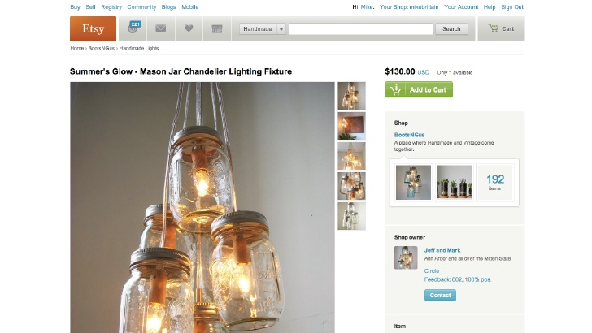
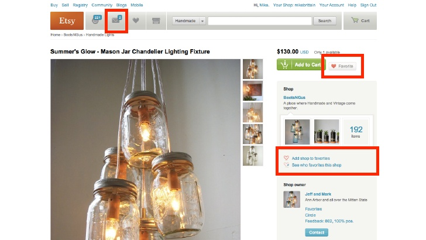
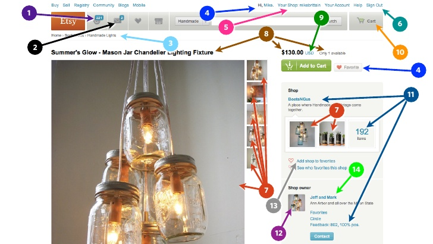

UWSGI
uWSGI
New Ingredient For Your Web-Application Soup
Goals
- learn about wsgi specification
- learn about uwsgi project
- know why those are important for web application developers
The usual
WSGI
Web Server Gateway Interface. It is a specification for web servers and application servers to communicate with web applications (though it can also be used for more than that).
WSGI.org
- programming interface specification
- defines single way of interaction between application components
- widely adopted
WSGI Application Interface
def application(environ, start_response):
response_body = 'The request method was {m}'.format(m=environ['REQUEST_METHOD'])
status = '200 OK'
response_headers = [('Content-Type', 'text/plain'), ('Content-Length', str(len(response_body)))]
start_response(status, response_headers)
return [response_body]
PSGI: Similar Specification in Perl
use v5.12;
my $app = sub {
my $env = shift;
my $body = 'The request method was ' . $env->{REQUEST_METHOD};
return [ '200 OK',
[ 'Content-Type' => 'text/plain', 'Content-Length' => length($body) ],
[ $body ]
]
}
- No special libraries required to test this code
- Quite easy to read and write it knowing basics of HTTP and CGI
WSGI Server Interface
- part of WSGI/PSGI specifications
- translates HTTP requests to WSGI calls
- translates WSGI results to HTTP responses
- apps do not depend on using particular server software
Many implementations are out there:
wsgiref.simple_server, mod_wsgi, mod_psgi, tornado, twisted...
plack, starman, starlet, twiggy...
uWSGI as WSGI server
To run WSGI app:
uwsgi --http :8080 --wsgi-file hello.py
# or
uwsgi --plugins http,python --http :8080 --http-modifier1 0 --wsgi hello
PSGI:
uwsgi --plugins http,psgi --http :8080 --http-modifier1 5 --psgi hello.pl
....others
uwsgi --plugins http,rack --http :8080 --http-modifier1 7 --rack hello.rb
uwsgi --plugins http,lua --http :8080 --http-modifier1 6 --lua hello.lua
Middleware
Components that play both sides
- consume and process wsgi application result as wsgi server
- return new result to be processed by server or another middleware
Common uses:
- logging
- transformations (xslt, filters, etc...)
- access control (authorization, rate limiting,...)
- uri mapping and load-balancing (e.g. conditional use of experimental code)
- debugging
Frameworks
Frameworks wrap server, middleware and add-ons into usable system
- minimize time required to build final product
- abstract complexities from the developer
- sometimes simplify requirements of WSGI
- normally require time to learn concepts of whole system
Frameworks: Python
Frameworks: Perl
I like Flask
I do not have reasons to say it's better than Django
or others, it's just simple and reliable.
- defines set of useful decorators to make apps look neat
from flask import Flask
app = Flask(__name__)
@app.route("/")
def hello():
return "Hello World!"
if __name__ == "__main__":
app.run()
based on Werkzeug (another framework) and Jinja 2 (templating engine)
asergeyev@:uwsgi-test$ python flask-test.py
* Running on http://127.0.0.1:5000/
127.0.0.1 - - [09/Aug/2012 23:18:23] "GET / HTTP/1.1" 200 -
127.0.0.1 - - [09/Aug/2012 23:18:24] "GET /favicon.ico HTTP/1.1" 404 -
^C
Stop, isn't this talk about uWSGI?
- right, but it's around same spec
- let's show how to use flask-test.py with uwsgi
- and use uwsgi INI file to save command line space
- similar approach will work for other frameworks
# flask.ini - settings for typical flask app
[uwsgi]
plugin=python,http
http=:8080
callable=app
uwsgi --ini test.ini --wsgi flask-test
That gives us faster application and ability to use uwsgi protocol to even
better frontend servers.
*&+_^%-(#=(@*&# uwsgi protocol?!
Yes, “uwsgi” Protocol
- binary protocol to transmit any type of data
- TCP, UDP/Multicast, STCP (future) transport
- supported in uWSGI, Apache and Nginx (mod_uwsgi) and other apps
- idea is to send requests and responses in something better than HTTP (modern multi-component webapps interact a lot)
uWSGI Added Value
- FastRouter - async proxy/load-balancer/router talking uwsgi (many features)
- uWSGI Emperor - spawns vassals for multiple apps on demand (+awesome plugins for it)
- flexible logging options (UDP, Socket, ZeroMQ, Graphite and RRD plugins)
- CGI "upscaling"
- "harakiri" mode
- hot (re-)loading, dynamic apps support, configuration updates
- Spooler to manage long-running tasks; "Mule" worker proceses; Clustering
- shared memory, shared distributed cache, API to talk to it
Why is all this?
uWSGI allows you:
- split your tasks between more components
- control load on each application instance
- scale your system as needs to change
- control how your systems fail
- spool additional tasks without additional task manager
Few Clarifications
uWSGI is not a framework. Its tools are so convinient that it's easy to write uWSGI dependent code, which is not always ideal.
- tools are always evolving, even uWSGI ones
- it's easier to test code that does not depend on external libs
- consider creating a middleware that needs uWSGI and could be replaced
uWSGI is a fast, self-healing and
developer/sysadmin-friendly application container server coded in pure C.
uWSGI website (Roberto De Ioris)
Recap
- Split your web-apps to components whenever possible
- Follow WSGI, it assures that your components use compatible interfaces
- Consider using uWSGI, fast app container with many added features
- Use uwsgi protocol for server to server (e.g. frontend to backend) communication
- Think about your critical path in your applications
Velocity 2012: Resilient UX Example

Velocity 2012: Resilient UX Example

Velocity 2012: Resilient UX Example

Using Server Side Includes
<!--#set var="title" value="About us" -->
<!--#include virtual="header.html" -->
<h1><!--#echo var="title" --></h1>
<!--#include virtual="advertising.html?theme=corporate" -->
<p>Under construction!</p>
<!--#include virtual="footer.html" -->
- Varnish, re-invented the wheel but introduced "edge SSI"
- Apache, nginx were doing this since they were created
- nginx and Varnish can execute sub-requests concurrently
- you can individually cache responses
- you can define way of handling sub-request failures
Questions?
More:
{kind=link}